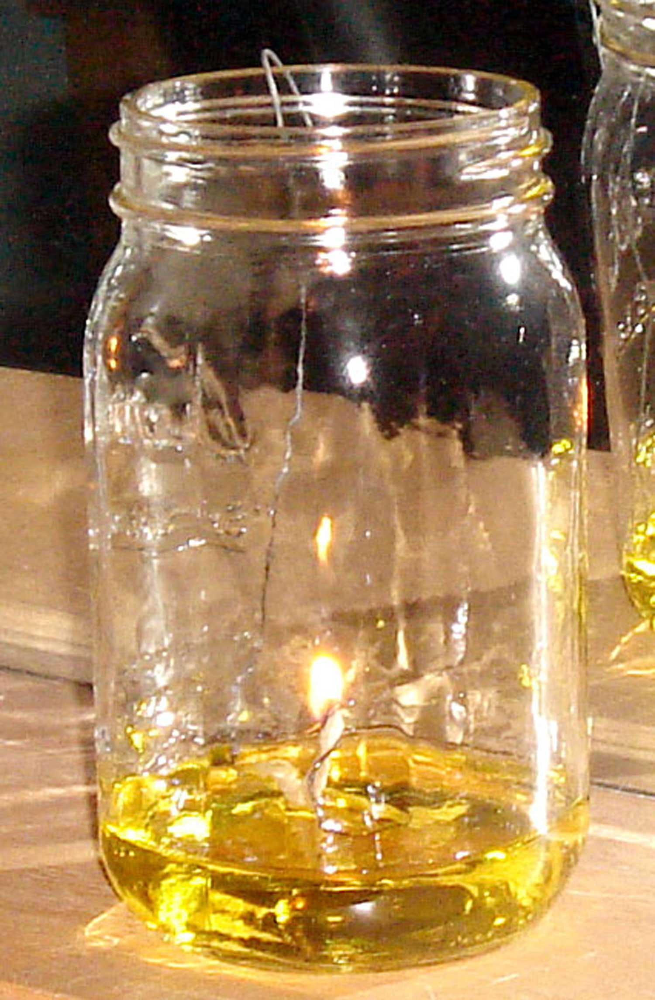
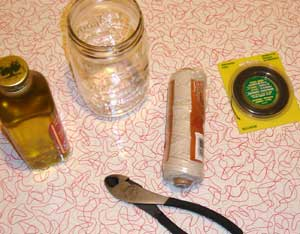
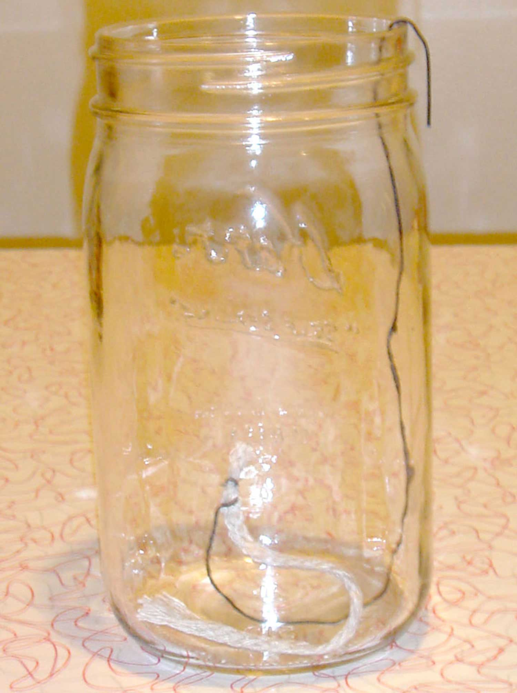

If you live in an area that frequently experiences power outages due to hurricanes, high winds and other storms, one of the things you want to have on hand during storm season is backup lighting. Candles are a sure bet, but they don’t put out much light and - if you want to choose options made from renewable, organic materials - beeswax and soy candles can get mighty expensive.
There are hand-crank and battery-powered lanterns, but what if you don’t already have one on hand when a power outage strikes? The same problem exists if you’re looking for a kerosene or other oil-style lamp. So, what do you do during an emergency for light? How about something that is easy to acquire, inexpensive and gentle on the environment?
The answer is you can make your own olive oil lamp. You don’t need much in the way of equipment and if you don’t have olive oil, you can replace it with other types of cooking oil - or any kind of liquid fat or grease in a pinch. However, I must warn you that while olive is a 99 percent pure renewable fuel that won’t produce smoke or odor, I can’t vouch for canola or corn oil as being smoke-free or that it won’t make the house smell like burnt popcorn.
Making your lamp is relatively easy, and most likely you will have many of the materials on hand already. Here’s what you’ll need:
The olive oil is drawn up the wick where it vaporizes and gets burned by the flame. A few ounces of oil will burn for several hours, so if you are concerned about the cost, it is much cheaper than most candles. If you can find lampante oil (olive oil not suitable for eating, but for burning), you can save money by buying that instead of culinary olive oil.
Want to get fancy with your olive oil lamp? You can infuse your olive oil with herbs, spices or essential oils for a more scented experience.
Olive oil lamps have been used for thousands of years and people have relied on oil lamps in general up until the last few generations. They are reliable, plus they burn bright and long. The benefit of olive oil is that if the lamp gets knocked over, it stops burning because it has a high flash point, meaning that it’s not a very flammable material. As a result, an olive oil lamp is far safer than a candle or kerosene lantern. If you are having problems with it smoking when you blow it out, use wet fingers to put out the flame, or just douse it with the oil in the jar.
One of the benefits of using a canning jar is that, when the oil lamp is not in use, you can put a canning lid on top for storage. A wide-mouthed pint jar will also work well, you just need to adjust the size of the wick holder.
For your wick, you can use 100 percent cotton string or twine and salt it to ensure that it burns long. To salt your wick, take your cotton twine, put it in a bowl with a little water and then cover with table salt. Squeeze it dry and let it dry overnight, or until it is no longer damp.
If you need or want your lamp to emit more light, try using a braided, flat wick (a half inch or narrower), adjusting the way the wire supports this kind of wick by crimping it to accommodate the extra girth. You can buy flat wicks from stores that carry supplies for oil lamps (such as Lehman’s). Or, you can cut up an old 100 percent cotton tea towel into strips and use that instead.
If this all seems a bit too complicated to manufacture on your own and you would rather buy an olive oil lamp, you’ll find old fashioned oil lamps online from Lehman’s. Be sure to check out the book I Didn’t Know That Olive Oil Would Burn while you are at it.
Have you used or built an olive oil lamp? Share your experiences by posting a comment below.
|
 DEANNA DUKE This olive oil lamp is fast and easy to make at home, and it’s a safe, reliable light to have around during power outages. |
 DEANNA DUKE You can make your own olive oil lamp using common household materials: a canning jar, wire, string and olive oil. |
 DEANNA DUKE To make the lamp, you form one end of the wire into a hook that fits over the edge of the jar, and the other into a small coil that wraps around the wick. |